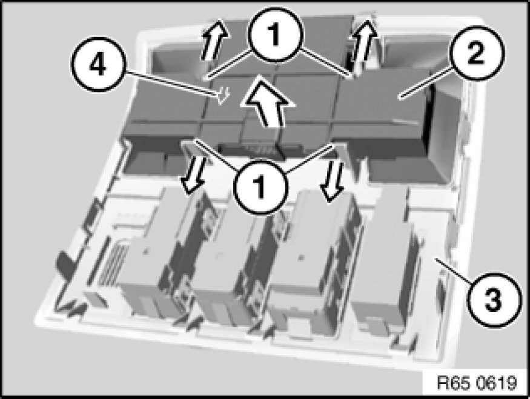

Antitheft Motion Sensor: Service and Repair
65 75 071 - Removing and installing (replacing) module for passenger compartment sensor

Necessary preliminary tasks:
- Remove front roofliner trim 51 44 ... - Removing and installing front roofliner trim

Open detent lugs (1) in direction of arrow and remove module for passenger compartment sensor (2) from front roofliner trim (3).
Installation:
Arrow (4) on module for passenger compartment sensor (2) points in direction of travel.